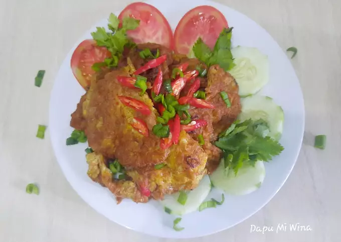

Telur Dadar Bumbu Rendang
Bahan-bahan
- 3 butir telur
- 1 buah kentang ukuran kecil, iris korek api
- 2 batang daun bawang, iris
- 2 buah cabe, iris
- 3 siung bawang merah, iris
- 3 sdm, bumbu rendang
- secukupnya garam
- secukupnya kaldu bubuk
- 200 ml air
Langkah
- Siapkan semua bahan. Campurkan telur, irisan kentang, bawang, daun bawang, cabe, garam, dan kaldu
di dalam mangkuk, kocok rata. Panaskan minyak, goreng hingga berwarna kecoklatan, angkat, tiriskan,
potong sesuai selera.
- Dalam wajan, masukkan bumbu rendang, tambahkan air, aduk rata. Lalu tambahkan telur,
masak hingga bumbu menyusut.
- Sajikan dengan nasi hangat.